History and Development
Early Development of Continous-Loop Tape Catridges
Echo-Matic
In 1952, Bernard Casino developed the first continuous-loop tape cartridge, called the Echo-Matic. 1/4-inch, oxide-coated tape was drawn at 3.75 inches per second from the center of a single reel. It was then drawn back on to the outside of the same reel. It used an inch-long conductive foil to signal the start / stop of the program, which activated a track change circuit.
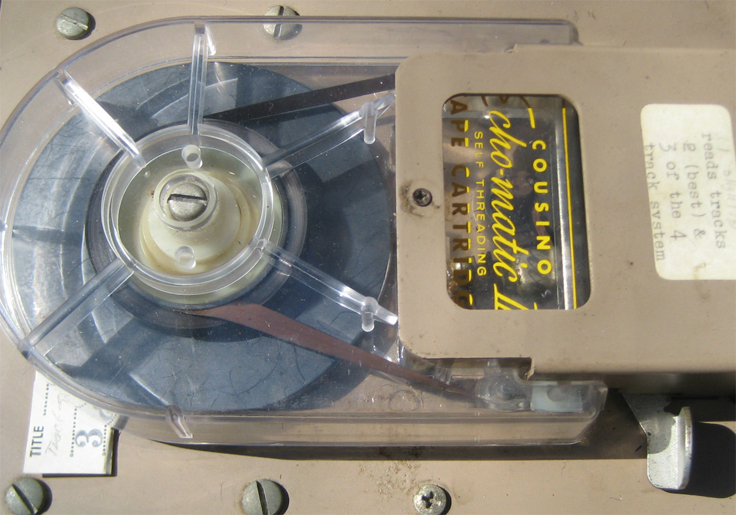
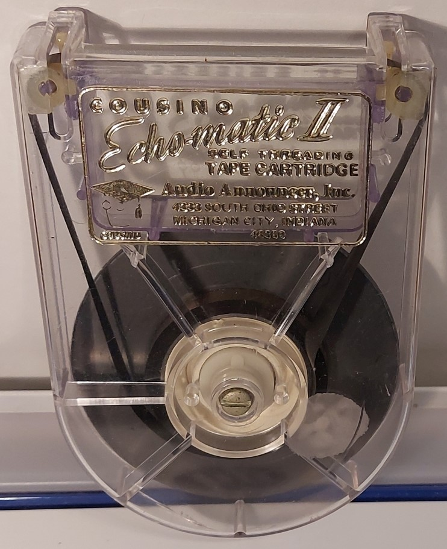
Fidelipac
A year later, in 1953, George Eash invented the Fidelipac cartridge design, which was fairly similar to the Echo-Matic in its base design. It was most notably used by radio broadcasters and stations for commercials, jingles and other short audio tracks.
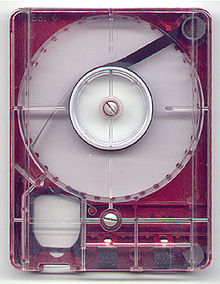
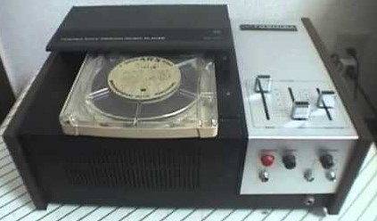
Muntz Stereo-Pak 4-Track Tapes
In 1962, entrepreneur Earl "Madman" Muntz, created Stereo-Pak 4-Track Stereo Tape Cartridge System, also known as "CARtrdiges", as an attempt to create a tape cartridge system for automobiles. The cartridge design was similar to that of Fidelipac. The tape ran at 3 3/4 inches per second and contained 2 stereo programs, totaling 4 stereo tracks. Pre-recorded tapes were manufactured until the 1970s, due to 8-Track tapes winning popularity.
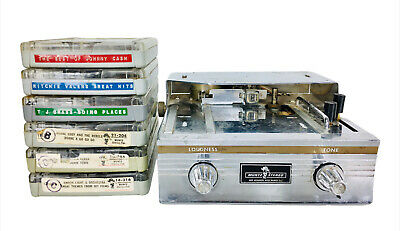
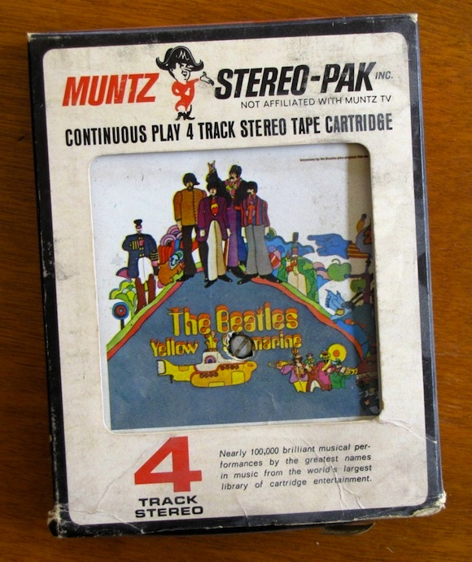
8-Track Tapes Developement
Initial Development
In 1963, Richard Kraus of Bill Lear's Jet Corporation developed the 8-Track cartridge or Stereo 8. Unlike previous tape cartridges, the 8-track integrated the rudder pinch into the cartridge itself as opposed to having it as a part of the player. It also lacked a tape tensioning and slippage mechanism. In addition, the 8-Track tape had 4 stereo programs, or a total of 8 tracks, doubling the number of tracks of Muntz's 4-track with only two stereo programs. In 1964, Lear prepared 100 demo 8-Track players from automobile manufacturers and RCA executives.
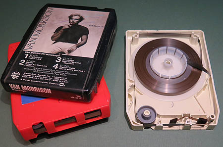
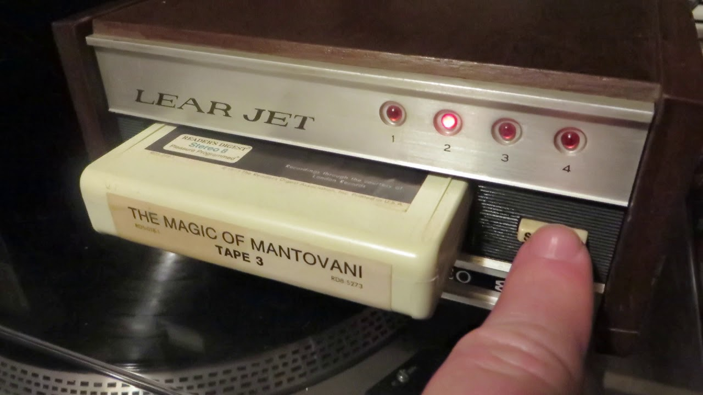
Release in Automobiles
In September of 1965, Ford started offering 8-track players in three of their 1966 models. At the time both 4-track and 8-track cartridges were increasing in popularity due to the growing automobile industry. RCA's Victor and Camden record label also added 175 8-track tapes to its catalog. All Ford car models offered an 8-track player upgrade option by 1967, although most of the initial automobile 8-track players were sperate of the main dashboard stereo unit.

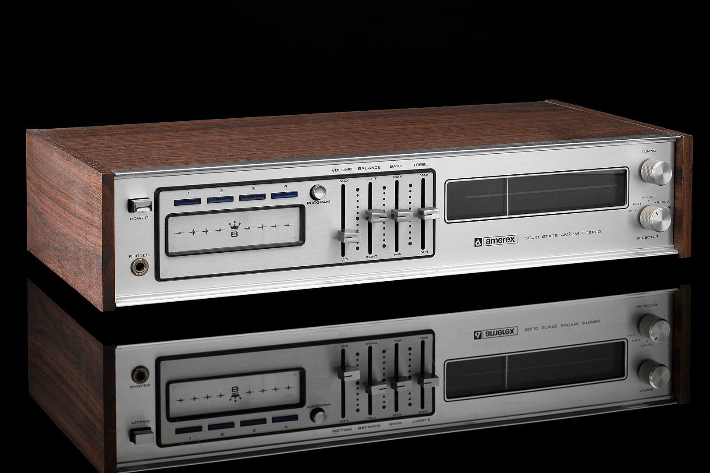
Home Units and Continued Popularity
Due to lack of support from automobile companies, the Muntz's 4-track lost popularity to 8-track and was discontinued by the late 1970s.
Stereo 8 continued to gain popularity due to its portability and how simple it was to use. In 1966, home 8-track players began production. Demand for home units was helped by the demand for car units. In the late 60s, 8-track tapes were the largest segment in the consumer electronic market. 8-Track "Boombox" style players were also released by Tandy RadioShack but didn't gain popularity. By the late 1960s, 8-Track tapes were at the height of their popularity, with albums arriving in stores within months of the record releases.
Quadraphonic 8-Track Tapes
In April 1970, RCA announced the released Quadraphonic 8-track tapes. Quadraphonic sound uses four channels of sound. Therefore, Quadraphonic 8-track tapes or Quad-8, only had two programs, since each program had 4 channels of sound instead of 2.
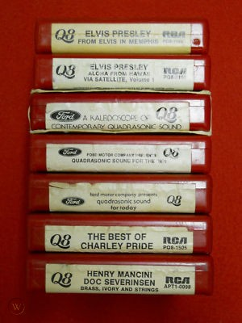
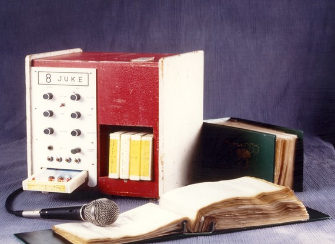
First Karaoke Machines
In 1971, Japanese businessman, Daisuke Inoue, created the first karaoke machine, using a microphone, 8-track tape, and co-op system. It was called Juke-8.